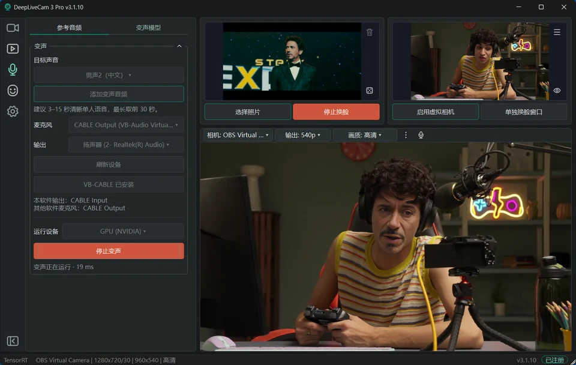
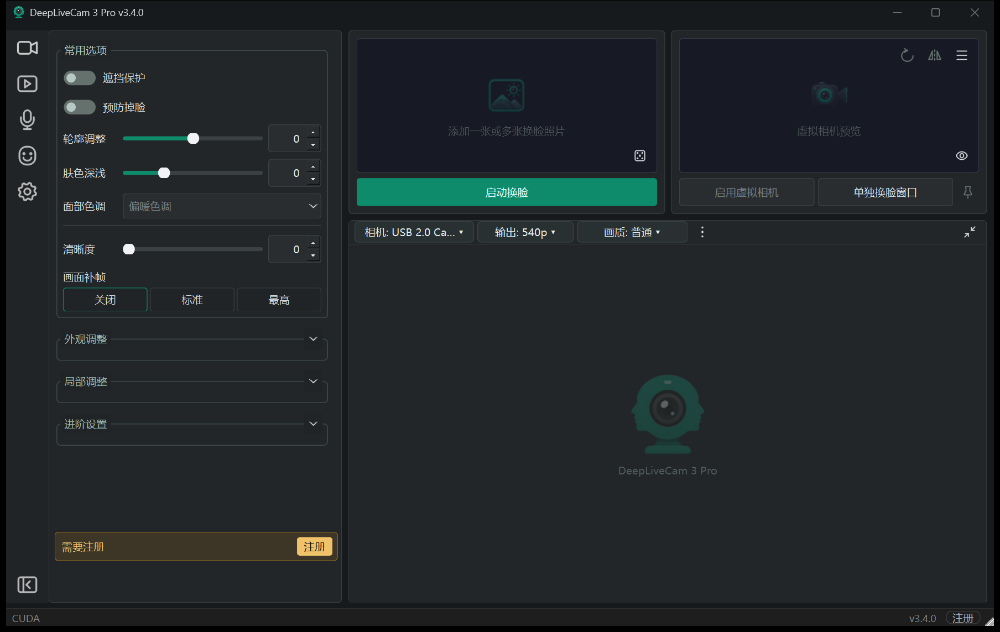

界面是中文的，按钮名字跟下面这些图里一一对得上。新版界面和经典界面都有，装好后可以切。
每个表情，实时呈现。选择人像，打开摄像头，转头、微笑、说话的同时，按画面调整融合、嘴部保留与遮挡保护。

把处理后的画面直接当作摄像头输入：OBS、直播伴侣、YYCam 等直播软件，WhatsApp、Telegram 等通话软件里选 “DLC-Pro 虚拟摄像头” 就行。
OBS / 直播伴侣 / YYCam 等直播软件接入。Windows 11 用虚拟相机，Windows 10 可以开「单独换脸窗口」再让 OBS 采集这个窗口。
WhatsApp、Telegram 等社交软件通话时直接选虚拟摄像头。
相机来源、输出分辨率（如 540p）、画质档位都能在界面上调，需要更高画质用高清 / 超清（NVIDIA）。
从一张照片，到一部作品。先预览视频，选中要替换的人物，再开始处理；图片支持单张、批量处理，也支持多人替换。

声音也有你的风格。实时转换麦克风声音：只需 5 秒目标音频，就能实时换成目标的音色；还能加载自己用 RVC 训练的模型。

让照片跟随你的表情。用摄像头画面实时驱动人像、卡通画与宠物照片，微笑、眨眼、口型，让静态形象动起来，支持实时录屏。
这是出货版第一次打开的样子：左下角写着「需要注册」，拿到卡号在软件里兑换后就解锁，六个功能键全部可用。

咱们现在出货的是标准版（DeepLiveCam 3 Pro 3.4.0）。经典版（2 Pro）只在你显卡很旧时才考虑。
| 项目 | 标准版 DeepLiveCam 3 Pro | 经典版 DeepLiveCam 2 Pro |
|---|---|---|
| 操作系统 | Windows 10 / 11，64 位 · 22H2 或更新 | Windows 10 / 11，64 位 |
| NVIDIA | GTX 16 / RTX 20 系列起 | GTX 950 桌面版起；高清 / 超清需 GTX 16 / RTX 20 起 |
| AMD | 支持 DirectX 12 的兼容型号，普通、清晰画质 | 不支持 |
| 实时摄像头换脸 | ✓ | ✓ |
| 视频换脸与目标人物选择 | ✓ | ✓ |
| 单张图片换脸 | ✓ | ✓ |
| 文件夹批量图片处理 | ✓ | 不支持 |
| 保留视频原音频 | ✓ | ✓ |
| 直播多人换脸 · 最多 3 人 | ✓ | ✓ |
| 多照片融合 | ✓ | ✓ |
| 遮挡保护与预防掉脸 | ✓ | ✓ |
| 内置虚拟摄像头 · Windows 11 | ✓ | ✓ |
| 高清 / 超清画质 · NVIDIA | ✓ | ✓ |
| 实时变声 · NVIDIA | ✓ | 不支持 |
| 参考音频 / RVC V2 声线 · NVIDIA | ✓ | 不支持 |
| 人物 / 动物头像动画 · NVIDIA | ✓ | 不支持 |